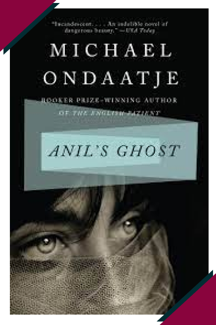

Chapter 3
Extraction, Burial, and Reburial in Anil's Ghost

Context
published in 2000
set in Sri Lanka in the 1990s
follows an investigation into the state-sponsored murder of a miner during the Sri Lankan Civil War
Chapter 3 Argument
![In Anil’s Ghost, forensic pathologist Anil Tissera returns to her home country of Sri Lanka to investigate human rights abuses during its civil war. In this investigation, she discovers a state-sponsored murder of a miner, suspected of being a rebel sympathizer: which becomes one instance of a recursive motif of extraction and burial throughout the novel. In this motif, bodies, resources, and stories are unearthed, but when Anil’s discovery is ultimately suppressed by the government, more bodies and stories are reburied.](chap3arg1.svg)
![This motif establishes political violence, This is exemplified by mines (buried explosives) and the murder Anil investigates, as intertwined with the industry of mining, which is rooted in Sri Lanka’s colonial history.
This historical context of Anil’s Ghost, coupled with the recurring motif of extraction and burial, challenges the idea of a linear historical progression from colonial to postcolonial in Sri Lanka amid the persistence of colonial legacy in political instability and resource extraction.](chap3arg2.svg)